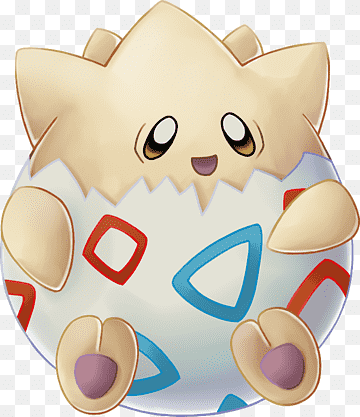

<!DOCTYPE html>
<html lang="en"></html>
<head>
  <meta charset="UTF-8" />
  <title>My Resume</title>
</head>
<body>
  <h1>Miss Jade M Resume</h1>
  <hr />
  <h2>The motivation is undeniable.</h2>
  
  <p>
    Hi! Welcome to my online porfolio - I'm extremely excited to present my work
    and I hope you find it as interesting as I found creating it. There's
    something about developers, the creativity, the ambition, the advancement. I
    hope you see all of this shining through my work.
  </p>
  <p>
    Please do let me know if you have any questions and don't forget to hit that
    contact button at the bottom of the page if you would like to reach out -
    Always here!
  </p>
  <h3>Education</h3>
  <ul>
    <li>Grade 1</li>
    <li>Grade 2</li>
    <li>Grade 3</li>
    <li>Grade 4</li>
    <li>Grade 5</li>
    <li>Grade 6</li>
  </ul>
  <h3>Work Experience</h3>
  <p>
    Having worked within the Fashion Industry for over 10 years, there was
    something missing. Something that I couldn't find there. So what did I do? I
    continued to learn.
  </p>
  <p>
    The internet is an amazing thing, it matched my ambition perfectly and I was
    able to have a different outlet to call my own - One that allowed me to do
    whatever I wanted, with no limits.
  </p>
  <h3>Skills</h3>
  <ol>
    <li>Adaptability</li>
    <ul>
      <li>
        Something you learn to overcome or you allow challenges to overcome you.
        I chose the latter.
      </li>
    </ul>
    <li>Reliability</li>
    <ul>
      <li>
        There is nothing like a faker. One who doens't remain truthful to
        themselves - let alone other people. I am reliable and trustworty,
        something that may sound cliche, but ironicly hard to find.
      </li>
    </ul>
    <li>The best person ever</li>
    <ul>
      <li>It does what it says on the tin!</li>
    </ul>
  </ol>
  <h4><a href="./hobbies.html"> Hobbies</a></h4>
  <a href="./contact.html"> Contact</a>
  <hr />
  <footer>
    <p>© 2023 Cappii LDN</p>
  </footer>
</body>
